전자캐드기능사 (2010-10-03 기출문제)
1과목: 전기전자공학(대략구분)
1. 저항이 없는 코일에서 교류 전류와 전압과 위상차는?
- 위상이 같다.
- 전류가 90도 늦다.
- 전류가 45도 빠르다.
- 전압이 10도 빠르다.
(정답률: 68%)

2. 무궤환 시 증폭기의 전압이득이 100일 때, 궤환율 0.09의 부궤환을 걸어주면 이득은?
- 10
- 20
- 50
- 100
(정답률: 55%)
3. 진폭 변조에 대한 설명으로 적합하지 않은 것은?
- 반송파의 위상은 일정하고 주파수가 변하는 것
- 반송파의 주파수는 일정하고 신호파에 따라 진폭이 변하는 것
- 반송파의 진폭은 일정하고 주파수가 변하는 것
- 반송파의 진폭은 일정하고 위상이 변하는 것
(정답률: 55%)
4. 다음 회로에서 AB간 전압이 3[V]이면 전원 E의 전압은? (단, R1=2[kΩ], R2=6[kΩ])
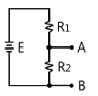
- 1[V]
- 2[V]
- 3[V]
- 4[V]
(정답률: 46%)
5. 전압전원 E, 부하저항 R일 때, 최대 전력을 부하에 전달하기 위한 조건은? (단, r은 전원의 내부저항이다.)
- r=0.5R
- r=R
- r=2R
- r=4R
(정답률: 57%)
6. 1[MHz]에서 150[Ω]의 리액턴스를 갖는 코일의 자기 인덕턴스는?
- 약 2.4[μH]
- 약 4.8[μH]
- 약 24[μH]
- 약 48[μH]
(정답률: 43%)
7. 100[Ω] 저항 4개를 접속하여 얻을 수 있는 합성저항 중 가장 작은 것은?
- 400[Ω]
- 100[Ω]
- 25[Ω]
- 10[Ω]
(정답률: 74%)
8. 트랜지스터 증폭회로에서 잡음이 없을 때 잡음지수는?
- ０
- １
- 10
- 100
(정답률: 69%)
9. 다음 중 FET에 대한 설명으로 틀린 것은?
- 입력 임피던스가 높다.
- 접합 트랜지스터보다 잡음이 적다.
- 다수 캐리어의 전류에 의해서만 동작한다.
- 게이트 전류로 드레인 전류를 제어한다.
(정답률: 41%)
10. 평행판 콘덴서에서 두 극판 사이의 거리를 1/4로 줄이면 정전용량의 변화는?
- 1/4로 감소한다.
- 2배로 증가한다.
- 4배로 증가한다.
- 변함없다.
(정답률: 72%)
11. 두 개의 저항 20[Ω]과 30[Ω]이 병렬로 접속된 회로에서 20[Ω]의 저항에 흐르는 전류가 3[A]이라면, 30[Ω]에 흐르는 전류는?(오류 신고가 접수된 문제입니다. 반드시 정답과 해설을 확인하시기 바랍니다.)
- 1[A]
- 2[A]
- 3[A]
- 4[A]
(정답률: 57%)
12. 발전회로에서 발진주파수의 변동을 가져오는 요인이 아닌 것은?
- 부하의 변동
- 주위 온도의 변화
- 전원전압의 변동
- 완충증폭기의 사용
(정답률: 53%)
13. 수정발진기에서 안정된 발진을 유지할 수 있는 주파수 f의 범위는? (단, fs : 직렬공진 주파수, fp : 병렬공진 주파수)
- f＞fp
- fs＞f
- fs＜f＜fp
- fs > f > fp
(정답률: 69%)
14. 다음 중 N형 반도체를 만드는 불순물은?
- 붕소(B)
- 인듐(In)
- 갈륨(Ga)
- 비소(As)
(정답률: 75%)
15. 실효값이 100[V]인 정현파 전압의 전파정류 시 평균값은?
- 약45[V]
- 약75[V]
- 약90[V]
- 약141[V]
(정답률: 43%)
2과목: 전자계산기일반(대략구분)
16. T 플립플롭에 대한 설명으로 옳은 것은?
- 클록펄스가 인가되면 출력은 0이다.
- JK 플립플롭을 이용하여 구현할 수 없다.
- 클록펄스 인가 시 출력은 항상 1이다.
- 클록펄스 인가되면 출력은 반전된다.
(정답률: 65%)
17. 기억 장치에 기억된 명령이 순서대로 중앙처리장치에서 실행될 수 있도록 그 주소를 지정해 주는 레지스터는?
- 프로그램카운터(PC)
- 누산기(AC)
- 명령레지스터(IR)
- 스택포인터(SP)
(정답률: 56%)
18. 프로그램에 대한 설명으로 잘못된 것은?
- 컴퓨터가 이해할 수 있는 언어를 프로그래밍 언어라 한다.
- 프로그램을 작성하는 일을 프로그래밍이라 한다.
- 프로그래밍 언어에는 C, 베이직, 포토샵 등이 있다.
- 컴퓨터가 행동하도록 단계적으로 지시하는 명령문의 집합체를 프로그램이라 한다.
(정답률: 74%)
19. 문자를 삽입할 때 필요한 연산은?
- OR 연산
- ROTATE 연산
- AND 연산
- MOVE 연산
(정답률: 49%)
20. 10진수 0.9375를 8진수로 변환하면?
- (0.73)s
- (0.74)s
- (0.76)s
- (0.77)s
(정답률: 53%)
21. 순서도 기호 중에서 비교, 판단 등을 나나내는 기호는?
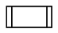
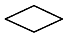
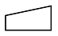
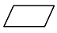
(정답률: 79%)
22. 간접 주소 지정 (indirect addressing)의 설명으로 옳은 것은?
- 대상주소의 데이터가 실제 데이터가 있는 주소가 되는 방식
- 주소지정방식은 인덱스 레지스터를 사용
- 데이터를 직접 레지스터에 더하거나 가져오거나 하는 방식
- 어드레스의 번지에 따라 변동성을 가지고 있는 방식
(정답률: 48%)
23. 캐시 기억장치(cache memory)가 위치하는 곳은?
- 입력장치와 출력장치 사이
- 주기억장치와 보조기억장치 사이
- 중앙처리장치와 보조기억장치 사이
- 중앙처리장치와 주기억장치 사이
(정답률: 58%)
24. 컴퓨터의 주변장치에 해당되는 것은?
- 연산장치
- 제어장치
- 주기억장치
- 보조기억장치
(정답률: 68%)
25. 숫자나 문자 등의 키보드 입력을 2진코드와 부호화하는데 사용되는 것은?
- 인코더(encoder)
- 디코더(decoder)
- 멀티플렉서(multiplexer)
- 디멀티플렉서(demultiplexer)
(정답률: 49%)
26. 다음 진리표를 만족시키는 회로는?
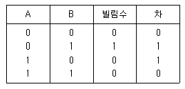
- 전가산기
- 반감산기
- XOR gate
- OR GATE
(정답률: 58%)
27. 다음 논리식 중 틀린 것은?
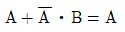
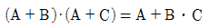
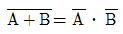
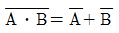
(정답률: 68%)
28. 다음 중 인쇄회로 가판의 특징이 아닌 것은?
- 대량 생산의 효과가 높다.
- 제품의 소형, 경량화에도 기여한다.
- 소량, 다품종 생산에는 제조 단가가 낮아진다.
- 제조의 표준화와 자동화를 기할 수 있다.
(정답률: 77%)
29. 다음 중 인쇄회로 기판에서 적층 형태의 종류에 해당되지 않는 것은?
- 다각형 PCB
- 단면 PCB
- 양면 PCB
- 다층면 PCB
(정답률: 68%)
30. 다음 중 자기유도 및 상호유도 작용과 밀접한 소자는?
- 코일
- 저항
- 콘덴서
- 다이오드
(정답률: 71%)
3과목: 전자제도(CAD) 이론(대략구분)
31. 다음 중 반도체 집적회로의 외형 패키지가 아닌 것은?
- PLCC 패키지
- SSUP 패키지
- DIP 패키지
- TQFP 패키지
(정답률: 44%)
32. 다음 기호에 해당하는 부품은?
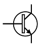
- PNP 트랜지스터
- NPN 트랜지스터
- 접합형 FET
- MOS형 FET
(정답률: 74%)
33. A4 용지의 크기를 올바르게 나타낸 것은?
- 841×1189[㎜]
- 594×841[㎜]
- 420×594[㎜]
- 210×297[㎜]
(정답률: 82%)
34. PCB Artwork에서 하나의 부품을 배치하였을 때, 부품이 갖는 특성 요소와 거리가 먼 것은?
- 부품명
- 부품 색깔
- 부품 치수
- 부품 번호
(정답률: 80%)
35. 전자부품의 심벌기호 중에 정전압 다이오드(제너다이오드)를 나타내는 것은?
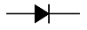
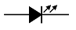
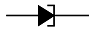
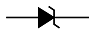
(정답률: 83%)
36. 인쇄회로기관(PCB)의 제작공정에 사용되는 원판을 낭비 없이 분할하여 사용하고자 한다. 원판의 크기가 1020×1220일 때, 404×507의 규격으로 분할하면 최대 몇 장의 분할이 가능한가? (단, 타겟가이드(여백)는 무시한다.)
- 4장
- 6장
- 8장
- 9장
(정답률: 63%)
37. PCB 제조 공정에서 소정의 배선 패턴만 남기고 다른 부분의 패턴을 제거하는 공정은?
- 천공
- 패턴형성
- 에칭
- 도금
(정답률: 73%)
38. 다음 중 전자캐드(CAD)에 주로 사용되는 출력장치로 적합한 것은?
- 레이저 프린터, 스캐너, 포토 플로터
- 포토 플로터, X-Y 플로터, 타블렛
- 레이저 프린터, 포토 플로터, X-Y 플로터
- ZIP 드라이브, 레이저 프린터, 스캐너
(정답률: 75%)
39. 다음 중 전자 CAD의 데이터 파일이 아닌 것은?
- Gerber DATA
- 프린트 기판 재료 DATA
- 배선정보(NET LIST) DATA
- 부품(PART LIST)DATA
(정답률: 65%)
40. 다음 중 도면의 사용 목적에 따른 분류에 속하는 것은?
- 배치도
- 조립도
- 착색도
- 주문도
(정답률: 50%)
41. 인쇄회로 기판을 설계할 때, 기판 구성의 유의점이 아닌 것은?
- 부품배치는 회로도를 중심으로 배치함을 원칙으로 한다.
- 커넥터의 부착이나 통풍, 배기 등 기구와의 관계를 주의 하면서 기판의 배열을 생각하여야 한다.
- 부품의 부피와 피치(pitch)를 확인하여 적절한 부착위치를 설정한다.
- 기판의 패턴과 부품이 케이스나 PCB의 다른 부품과 접촉 되도록 랜드의 구성이 이루어져야 한다.
(정답률: 66%)
42. 다음 중 CAD 시스템의 1밀(mil)과 같은 길이는?
- 1/10
- 1/100
- 1/1000
- 1/10000
(정답률: 65%)
43. 축적 1/25의 도면에서 도면상 길이가 2[㎜]일 때, 실제 길이는?
- 1.25[㎜]
- 2[㎜]
- 12.5[㎜]
- 50[mm]
(정답률: 71%)
44. 인쇄회로기판(PCB)의 패턴 설계 시 유의사항에 대한 설명으로 옳은 것은?
- 패턴은 가급적 가늘고 길게 한다.
- 회로에서의 각 접지점마다 패턴을 설계하는 다점 접지방식으로 패턴 설계를 한다.
- 취급하는 전력 용량이나 주파수 대역, 신호 형태별로 회로의 특징이 다를지라도 기판은 하나로 통합하여 설계한다.
- 도체 사이의 거리가 가까울수록, 절연물의 유전율이 높을수록 부유 용량이 커지므로 패턴 사이의 간격을 늘리거나 차폐를 행한다.
(정답률: 60%)
45. PCB DESIGN에서 설계 오류를 검사하는 기능은?
- Netlist
- Zoom
- Edit
- DRC
(정답률: 74%)
46. 제품이나 장치 등을 그리거나 도안할 때, 필요한 사항을 제도기구를 사용하지 않고 프리핸드(freehand)로 그림 도면은?
- 복사도(copy drawing)
- 원도(orignal drawing)
- 트레이스도(traced drawing)
- 스케치도(sketch drawing)
(정답률: 76%)
47. 유연성이 있는 기판을 사용하여 제작된 PCB를 뜻하며 프린터의 헤드와 같은 부분에 적용되는 것은?
- 플렉시블 PCB
- 리지드 PCB
- 다층 PCB
- 단층 PCB
(정답률: 81%)
48. 다음 중 전자회로, 인쇄회로 기판(PCB)등을 설계하기 위하여 만들어진 CAD 프로그램과 밀접한 것은?
- CAE
- EDA
- FMS
- PACS
(정답률: 52%)
49. 다음 중 전자 또는 통신기기 등의 전체적인 동작이나 기능을 블록으로 그려 도면에 표시한 것은?
- 회로도
- 접속도
- 블록선도
- 배선도
(정답률: 81%)
50. 다음 중 CAD 시스템의 특징이 아닌 것은?
- CAD는 전자분야에만 쓸 수 있는 설계시스템이다.
- 다품종 소량생산에도 유연하게 대처 할 수 있다.
- 도면의 수정과 편집이 쉽고 출력이 용이하다.
- 도면의 이동과 복사, 확대 및 축소가 용이하다.
(정답률: 69%)
51. 다음 그림은 어떤 부품을 나타내는가?
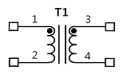
- 트랜지스터
- 트랜스포머
- 코일
- 커패시터
(정답률: 53%)
52. 사진이나 그림, 문서, 도표 등을 컴퓨터에 디지털화하여 입력하는 장치는?
- 터치스크린
- 스캐너
- 마우스
- 라이트 펜
(정답률: 70%)
53. 다음 중 PCB 레이아웃 설계과정이 아닌 것은?
- 회로도면설계
- 부품배치
- Spice 시뮬레이션
- Post Processing
(정답률: 64%)
54. 전자 CAD에서 부품을 복사, 붙여 넣거나 편집하는 기능이 있는 메뉴는?
- File 메뉴
- Edit 메뉴
- Help 메뉴
- Option 메뉴
(정답률: 73%)
55. 다음 CAD Software 중 전자 CAD 용으로 접합하지 않은 것은?
- OrCAD
- AutoCAD
- PCAD
- CADSTAR
(정답률: 68%)
56. 다음 ( )안에 알맞은 용어는?
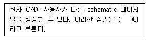
- 적층
- 본딩
- 프리플레그
- 계층구조블럭
(정답률: 48%)
57. 다음 중 능동 소자에 속하는 것은?
- 트랜지스터
- 저항
- 코일
- 콘덴서
(정답률: 76%)
58. 다음 중 CAD Tool을 사용하여 Analog회로를 PCB를 설계하고자 할 때, 험(Hum)이나 잡음(Noise) 등을 최소화하기 위해 가장 신중하게 패턴 설계가 요구되는 것은?
- 접지(Ground) 라인
- 버스(Bus) 라인
- 신호(Signal) 라인
- 바이어스(Bias) 라인
(정답률: 60%)
59. PCB Artwork에서 부품은 꽂는 부분의 동박면은?
- hole
- point
- pad
- line
(정답률: 65%)
60. 다음 중 반투명의 옅은 녹색가판으로 다층기판을 구성 할 수 있어 산업용, PC 및 주변기기 등에 널리 사용되는 것은?
- 페놀(phenol)계 수지
- 에폭시(epoxy) 수지
- 실리콘(silicon)계 수지
- 테프론(teflon) 수지
(정답률: 57%)